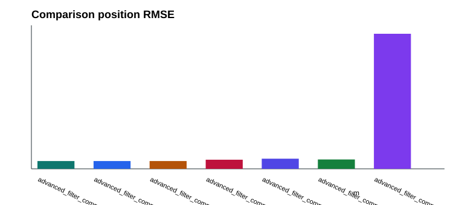

| Experiment | Filter | Profile | Position RMSE (m) | Velocity RMSE (m/s) | Rejected | Dropout max error (m) | Diverged |
|---|---|---|---|---|---|---|---|
| advanced_filter_comparison | linear | nominal | 1.229 | 0.423 | 88 | 1.007 | false |
| advanced_filter_comparison | sqrt | nominal | 1.229 | 0.423 | 88 | 1.007 | false |
| advanced_filter_comparison | information | nominal | 1.229 | 0.423 | 88 | 1.007 | false |
| advanced_filter_comparison | ekf | nominal | 1.436 | 0.773 | 1 | 2.725 | false |
| advanced_filter_comparison | robust | nominal | 1.604 | 0.747 | 0 | 3.004 | false |
| advanced_filter_comparison | adaptive | nominal | 1.481 | 0.772 | 1 | 2.640 | false |
| advanced_filter_comparison | particle | nominal | 21.352 | 3.660 | 79 | 13.889 | false |
